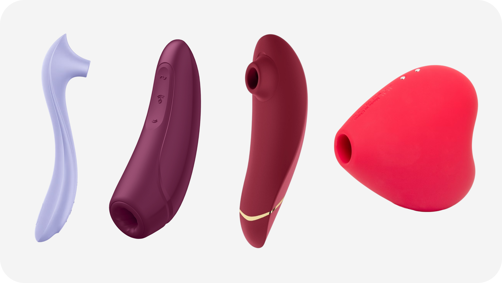

Клиторальный, или вакуумный, стимулятор представляет собой устройство для стимуляции клитора с использованием воздушных волн и вакуума, без прямого контакта с кожей. Имеет эргономичный корпус с силиконовой насадкой-раструбом и мотор для чередования давления/разрежения.
Назначение — провоцировать интенсивный оргазм за несколько минут, усиливая кровоток и чувствительность. Вакуумник создает эффект посасывания, воздействуя на нервные окончания через силиконовый раструб, что обеспечивает комфорт и отсутствие раздражения. Подходит для женщин с высокой чувствительностью, где вибрация вызывает онемение. Используется соло, в прелюдии или во время секса.
Вакуумные стимуляторы имеют несколько уровней интенсивности и режимов пульсации, часто бывают водонепроницаемыми и заряжаются через USB. Материалы — гипоаллергенный силикон, обеспечивающий мягкость и безопасность. Компактный размер позволяет использовать их соло, в паре или для стимуляции других зон, таких как соски или мошонка.
Вакуумно-волновые: С одной или двумя мембранами для мягкого посасывания. Сонные волны: Ультракороткие звуковые импульсы для глубокого воздействия на внутренние части клитора. Комбинированные: С вибрацией, подогревом или насадками для универсальности. Дистанционные: С управлением через приложение для парного использования.

Виды клиторальных стимуляторов
Выбор клиторального стимулятора во многом зависит от того, как именно обычно нравится получать стимуляцию. Тем, кто хорошо откликается на мягкое рассеянное воздействие, часто подходят модели с широкой зоной контакта, небольшие плоские камешки или устройства с округлой головкой, которые не бьют точечно. Если, наоборот, хочется ощущать более концентрированный сигнал, стоит присмотреться к стимуляторам с узким носиком или воздушно-волновым форматом: они дают более сфокусированное воздействие и позволяют точнее работать с центром клитора или его окружением.
Чувствительность играет важную роль. При высокой чувствительности лучше выбирать приборы с очень низким стартовым уровнем интенсивности и плавной регулировкой, чтобы можно было постепенно поднимать мощность, не перескакивая сразу к слишком сильному режиму. Если прошлый опыт показывает, что большинство вибраторов кажутся тихими по силе, можно рассматривать более производительные модели или комбинированные устройства, где есть и вибрация, и волновое воздействие. Форма тоже важна: кому-то удобнее держать стимулятор всей ладонью, кому-то как ручку, кому-то надевать на палец и совмещать с естественными движениями руки.
Материал и тактильные ощущения от корпуса определяют комфорт при длительном использовании. Силикон с мягким бархатистым или шелковистым покрытием часто воспринимается телом спокойнее и позволяет не бояться лёгкого давления. Пластик и жёсткие поверхности лучше передают вибрацию, но могут ощущаться более жёстко при сильном прижатии. Желательно, чтобы в зоне, где прибор касается кожи, не было грубых стыков, выступающих краёв и глубоких щелей, это снижает риск раздражения и облегчает уход.
Практические детали тоже не стоит игнорировать. Уровень шума важен, если игра планируется в общей квартире или за тонкими стенами: многие современные модели стараются держаться в умеренном диапазоне, но заметная разница всё равно есть. Время автономной работы и тип зарядки влияют на комфорт: кого-то устраивают сменные батарейки, другим проще привыкнуть к магнитному кабелю и просто ставить игрушку на зарядку раз в несколько дней. Водонепроницаемость расширяет сценарии, можно брать стимулятор в душ, совмещать струю воды и вибрацию или просто не переживать, если на прибор попала пена или капли.
Перед использованием стимулятора стоит нанести немного лубриканта на водной основе на область клитора и малых половых губ: это уменьшает трение, особенно если устройство опирается на кожу всей площадью. Лучше начинать с самого слабого режима, чтобы тело успело привыкнуть, и постепенно смещают прибор, ближе к центру клитора, к его краю, к уздечке, к зоне между клитором и входом во влагалище. Иногда оказывается, что самые приятные ощущения появляются не от жёсткого контакта в точку, а от движения по окружности или лёгкого наклона корпуса, когда стимулятор касается сразу нескольких участков.
Клиторальный стимулятор можно использовать как главное действие или как фон на протяжении других практик. Его легко комбинировать с проникновением, оральными ласками, стимуляцией руками или другой игрушкой. В парной динамике управление режимами можно передать партнёру, многие модели с пультом или приложением именно под это и заточены.
После сессии игрушку промыть тёплой водой с мягким мылом или специальным средством, аккуратно очищая область вокруг отверстий и стыков. Затем дать ей высохнуть на воздухе и убирать в отдельный чехол или коробку.
Клиторальный стимулятор даёт возможность исследовать свои чувства и реакции без обязательного проникновения, делая акцент на внешних ощущениях и индивидуальном ритме. Разнообразие форм и технологий позволяет подобрать вариант почти под любой запрос, от нежной фонаовой стимуляции до очень яркого адресного воздействия.